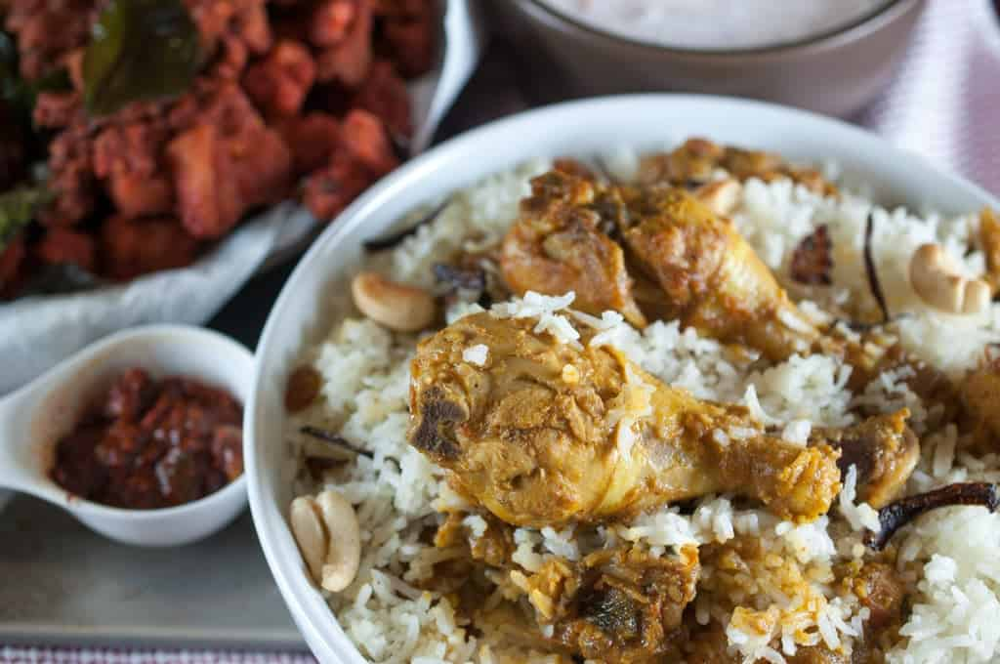

Home
Dosa

Description
Appam (also known as “palappam”) are tasty, lacy and fluffy pancakes or hoppers from the Kerala cuisine that are made from ground, fermented rice and coconut batter. Thin and crispy around the edges with soft fluffy center appam taste delicious when paired with vegetable stew for a hearty vegetarian breakfast. They also just so happen to be gluten-free and vegan.
Ingredients
- chicken
- Onion - 4 large sliced
- Green Chillies - 6
- Coconut Oil - 1 cup
- Bay Leaf - 1
- Cinnamon / Pattai - 1 stick
- Cardamom / Yelakai - 5
- Cloves / Krambu - 4
- Star Anise - 1
- Fennel Seeds / Sombu / Saunf - 1 tsp
- Tomato - 2 chopped finely
Procedure
- Wash and soak rice for 30 mins
- Now heat oil in a biryani pot. Add 3 sliced onions and cook till golden brown. Remove it to a bowl
- In the same oil. Add whole spices and let them sizzle.
- Add in 1 sliced onion and curry leaves. Cook till golden
- Add in ginger garlic paste and saute for a min.
- Cook Tomatoes and cook till mushy.
- Add chicken, chillies and spice powders and mix well.
- Add in yogurt and salt and mix well.
- Now Cover and cook till chicken is done. Now remove half of the masala to a bowl.
- Meanwhile when chicken is cooking, cook rice.
- Take water in a sauce pan, add salt, whole spices.
- Once water boils, add rice and cook for 8 to 10 mins till rice is done.
- Drain and set aside.
- Now in the masala. layer half of the rice, top with coriander leaves, mint leaves, fried onions.
- Layer remaining masala. Then rice, coriander leaves, mint leaves and fried onions.
- Cover the pot and cook on very low heat for 30 mins. Now leave aside for 15 mins.
- Now fluff up the rice and serve hot.